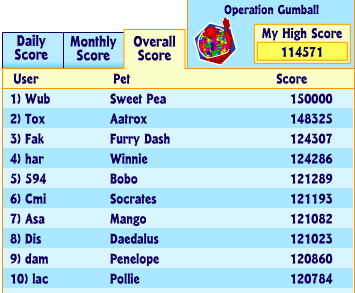

Sweet Pea is a Filthy Cheater
If you've ever played Webkinz Classic, you probably know the joys of playing at the arcade and trying to get a high score. My absolute favorite is Operation Gumball. The game works similarly to the classic code-breaker game Mastermind. There are 30 levels, and you are awarded points based on number of guesses and time. It's a super fun game that I am, not to brag, pretty good at. I frequent the high score of the day slot and have even sat at high score of the month a few times. However, the real test of who's on top is the holy grail: the top ten overall scorers. I've come just shy of this list numerous times. I've even fantasized about sitting up at that number one spot. But something doesn't sit right with me... If you venture to the "Scores and Achievements" section of the Kinzville Times, you'll see that the top dog, a Webkinz named Sweet Pea, has a perfect score of 150,000. None of the other scores across any of the operation gumball pages are such a perfect number. The scoring is incredibly intricate and the numbers often seem nonsensical. Each level you are awarded a time bonus (hilariously misspelled as "tome bonus") relating to the number of seconds you have left, so you'd have to line them up perfectly over 30 levels to achieve such a round number. To illustrate this, I played the first 5 levels and recorded my scores in the table below.
| Level | Level Score | Time Bonus | Total Score |
|---|---|---|---|
| 1 | 1000 | 46 | 1046 |
| 2 | 1020 | 47 | 2113 |
| 3 | 1152 | 55 | 3320 |
| 4 | 1269 | 62 | 4651 |
| 5 | 1404 | 73 | 6128 |
Below Sweet Pea, the second highest score is 148,325, and none of the next highest scores even crack 125,000. Is 150,000 simply the highest score possible? That might be the case, but if you ask me, there's a whole lot more to this story.